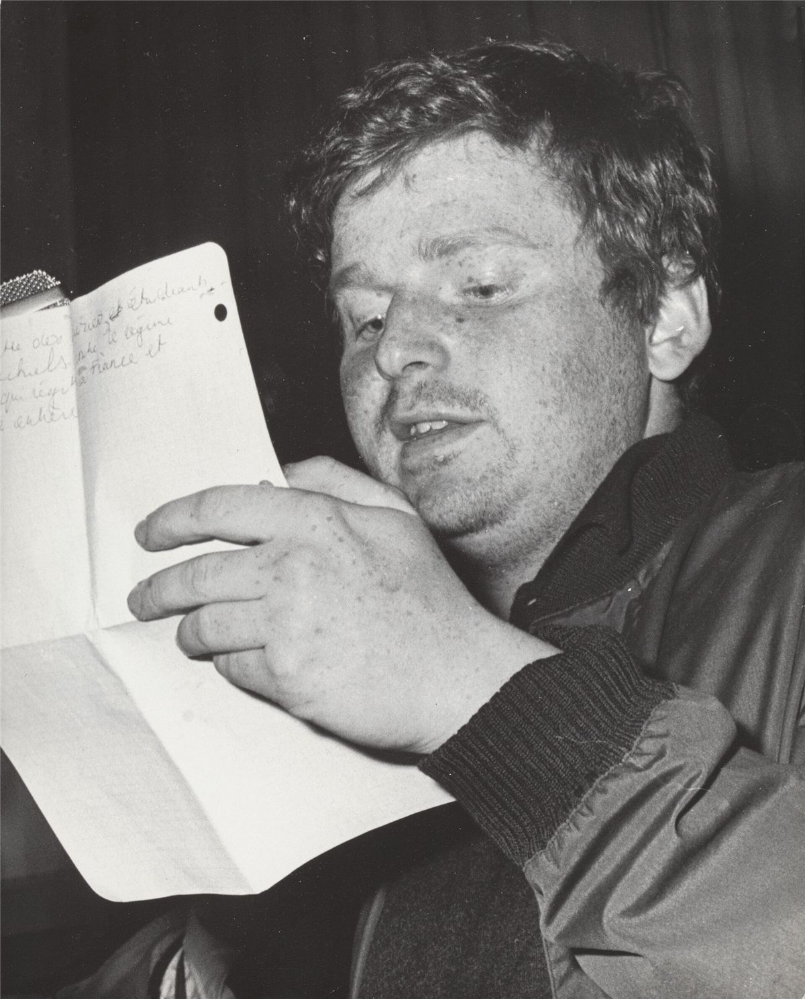
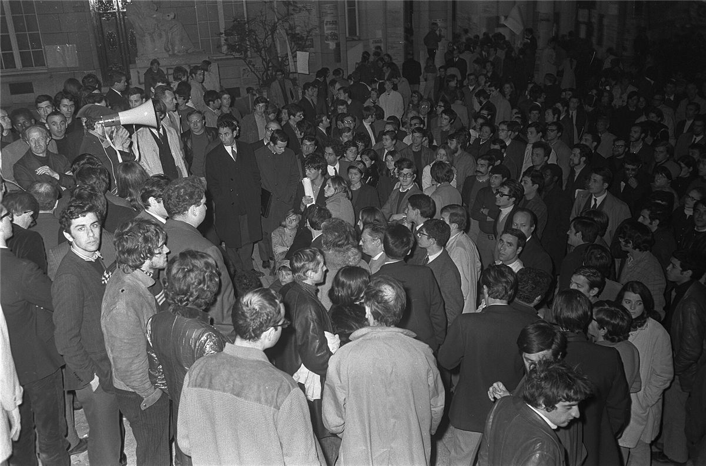

Mamie y était. Elle se souvient de l'odeur des pavés mouillés et du gaz, des nuits à discuter dans les amphis, et du silence étrange d'un pays à l'arrêt : plus de trains, plus d'essence, plus de courrier. Elle se souvient aussi de la fin, quand on a vu les syndicats ramener tout le monde au travail. Mai 68, c'est la preuve qu'un pays entier peut s'arrêter, et la leçon qu'il ne suffit pas de s'arrêter.
Ce dossier raconte Mai 68 d'un point de vue libertaire : depuis les assemblées, les comités et les grévistes de la base, pas depuis les chefs de partis et les dirigeants syndicaux qui ont négocié à leur place.
Le contexte
La France de 1968 est riche et bloquée. Le général de Gaulle est au pouvoir depuis dix ans. Les usines tournent à plein, mais les ouvrières et ouvriers sont mal payés, les cadences sont dures, les chefs autoritaires. À l'université, de plus en plus d'étudiantes et d'étudiants s'entassent dans des amphis où l'on n'a pas le droit de parler. La guerre du Vietnam révolte une partie de la jeunesse. Et partout dans le monde, de Berkeley à Prague, de Mexico à Berlin, ça bouge.
Nanterre et le Mouvement du 22 Mars
Le 22 mars 1968, à la fac de Nanterre, des étudiants occupent la salle du conseil de la faculté pour protester contre l'arrestation de militants opposés à la guerre du Vietnam. Ainsi naît le Mouvement du 22 Mars : pas un parti, pas un syndicat, mais un regroupement sans chef où se croisent anarchistes, trotskistes, situationnistes et inorganisés. Parmi ses porte-parole, un jeune anarchiste roux, Daniel Cohn-Bendit. Leur méthode : l'action directe, l'assemblée générale, et la provocation joyeuse.

Mai : la Sorbonne et les barricades
Le 2 mai, le doyen ferme Nanterre. Le 3 mai, la police évacue la cour de la Sorbonne et arrête des centaines d'étudiants. Le Quartier latin s'embrase. Chaque soir, les manifestations grossissent, la répression aussi. Dans la nuit du 10 au 11 mai, des milliers de jeunes dressent des dizaines de barricades rue Gay-Lussac et alentour. La police charge à l'aube. Les habitantes et habitants du quartier, qui ont entendu les combats en direct à la radio, jettent de l'eau aux manifestants gazés et les cachent chez eux. L'opinion bascule du côté des étudiants.
13 mai : la grève générale
Les syndicats appellent à une journée de grève et de manifestation le 13 mai. Des centaines de milliers de personnes défilent à Paris. Le soir, les étudiants occupent la Sorbonne. Mais le plus important se passe le lendemain, loin de Paris.
Le 14 mai, près de Nantes, les ouvriers de l'usine Sud-Aviation de Bouguenais se mettent en grève et occupent leur usine, en enfermant le directeur dans son bureau. C'est l'étincelle. Le 15, Renault-Cléon suit ; le 16, Renault-Billancourt. En quelques jours, sans aucun mot d'ordre national, la grève s'étend partout : usines, bureaux, grands magasins, mines, ports, trains, postes, écoles, théâtres, télévision. Selon les estimations, entre sept et dix millions de personnes sont en grève : la plus grande grève de l'histoire de France.

Grenelle : négocier la fin
Le gouvernement de Georges Pompidou convoque patronat et syndicats rue de Grenelle, au ministère du Travail. Le 27 mai, ils annoncent un accord : le salaire minimum augmente de 35 %, les autres salaires d'environ 10 %, et la loi reconnaîtra la section syndicale dans l'entreprise. C'est beaucoup. Mais quand Georges Séguy, chef de la CGT, vient le présenter aux ouvriers de Renault-Billancourt, ils le huent et votent la poursuite de la grève. Ils ne voulaient pas seulement plus d'argent : ils voulaient changer leur vie au travail.
Le retour à l'ordre
- Le 29 mai, de Gaulle disparaît : il est allé voir l'armée française en Allemagne, à Baden-Baden.
- Le 30 mai, il annonce à la radio la dissolution de l'Assemblée nationale. Le soir même, ses partisans défilent en masse sur les Champs-Élysées.
- En juin, la grève reflue usine par usine. Les syndicats négocient branche par branche et organisent des votes de reprise ; la police évacue les usines qui résistent. À Flins, le lycéen Gilles Tautin se noie le 10 juin en fuyant les gendarmes. À Sochaux, le 11 juin, deux ouvriers de Peugeot, Pierre Beylot et Henri Blanchet, sont tués lors de l'évacuation de l'usine.
- Le 12 juin, le gouvernement dissout une dizaine d'organisations d'extrême gauche, dont le Mouvement du 22 Mars.
- Les élections des 23 et 30 juin donnent une majorité écrasante aux gaullistes. La Sorbonne et l'Odéon sont évacués.
Chronologie
- 22 marsOccupation à Nanterre, naissance du Mouvement du 22 Mars.
- 3 maiLa police évacue la Sorbonne : début des émeutes du Quartier latin.
- 10-11 maiNuit des barricades rue Gay-Lussac.
- 13 maiGrève et manifestation géante ; occupation de la Sorbonne.
- 14 maiOccupation de Sud-Aviation à Bouguenais : la grève générale démarre.
- 15 maiOccupation du théâtre de l'Odéon.
- 27 maiAccords de Grenelle, rejetés par les ouvriers de Billancourt.
- 30 maiDe Gaulle dissout l'Assemblée ; manifestation gaulliste.
- 10-11 juinMorts à Flins et à Sochaux.
- 30 juinVictoire écrasante des gaullistes aux élections.
Dans ce dossier
- Assemblées, comités d'action et Atelier populaire : comment le mouvement s'organisait.
- Grenelle, la CGT et les leçons libertaires.
Sources et pour aller plus loin
Lire
- Mai 68 et ses vies ultérieures, Kristin Ross, Complexe, 2005.Contre la légende d'une simple révolte étudiante : Mai 68 comme grève ouvrière et rencontre entre étudiants et ouvriers.
- 1968. De grands soirs en petits matins, Ludivine Bantigny, Seuil, 2018.Une histoire « par en bas », à partir des archives des usines, des comités et des quartiers.
Sur le web
- Mai 68 sur WikipédiaUne chronologie très détaillée.
- Le Mouvement du 22 MarsLe groupe sans chef qui a mis le feu aux poudres.
- La nuit des barricadesLe 10 mai 1968, heure par heure.
Dossier rédigé par la bande à Mamie à partir de travaux d'historiennes et d'historiens et de textes des mouvements concernés. Libre de reproduction.